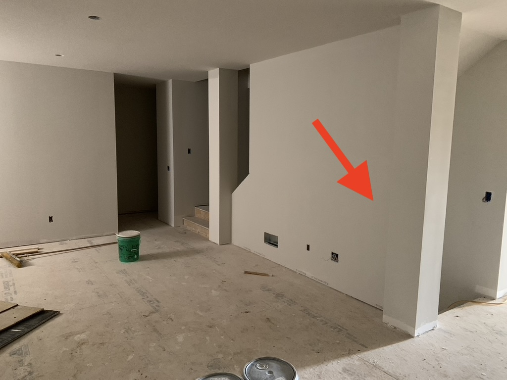
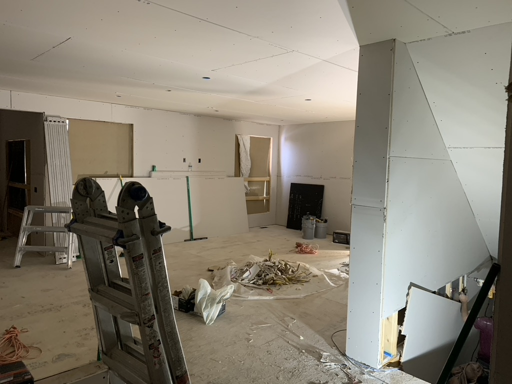
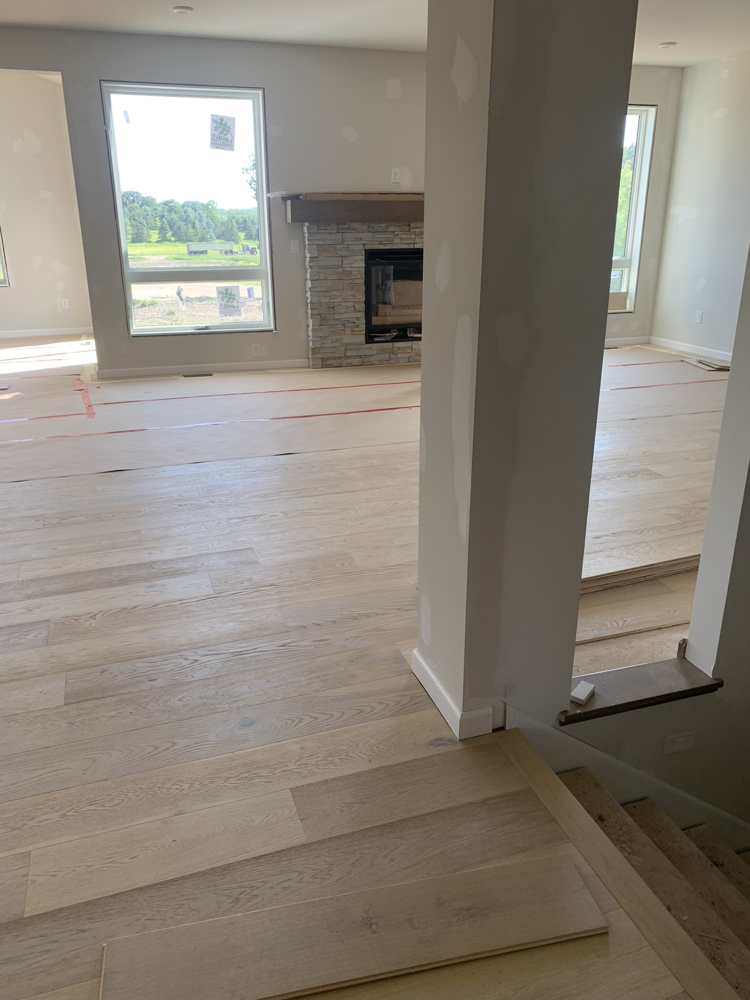

Wall Framed Incorrect | May, 2022
While doing a scheduled walk-thru of the house with the construction manager we noticed something... a wall was framed incorrect. It was supposed to be a pillar and instead was an entire wall.
We caught this issue at an interesting time. The ceilings had been sprayed with knockdown already and the walls had already been painted They corrected the framing issue, however, to this day we can still see on the ceiling where the knockdown doesn't look quite right in this area.
  